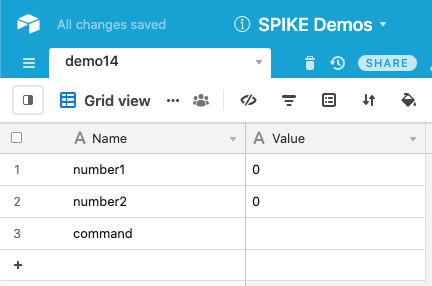
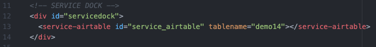
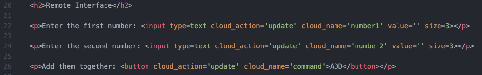
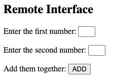
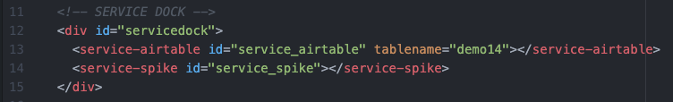
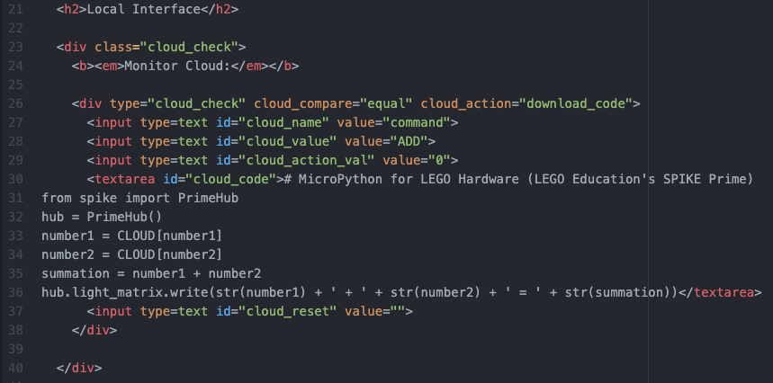
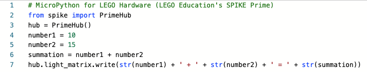

Demo 14: Math Bot Project
This project-demo shows how to create an interactive robot that solves user supplied math problems.
Documentation
Be sure to view the overall Documentation for configuring
the cloud storage (API key, Base ID, etc) and for more information on how the entire system works.
Airtable Setup
This is the same setup as (1) Text Box and (2) Simple Button demos. The "Name" column has an
entries for "number1" and "number2" (controlled by two text boxes) and
a "command" that will be set to "ADD" when the button is pushed.

Remote Page Setup
Service Dock
The remote page has the Airtable Service Dock element. Make sure to
update the tablename attribute to match your table name.

Remote Interface
The interface is two text boxes and a button.

This is what the interface will look like on the Remote Page:

Local Page Setup
Service Dock
The local page has both the Airtable Service Dock element (make sure
to update the tablename attribute to match your table name).
There is also a single SPIKE Prime Service Dock element.

Local Interface
The local page is only monitoring the command value. When activated (equals "ADD"),
it'll download and run the code (replacing "CLOUD[number1]" and
"CLOUD[number2]" with the respective values stored in Airtable.
The reset clears the command value in the cloud, so that the user can
activate it again from the remote interface.

This is how the interface will look on the Local Page:

Note: to develop the code I used CodingRooms to write the code, using
test values for the numbers to add. Then when I moved the code from
CodingRooms over to my webpage, I then replaced the test values with the
"CLOUD[number1]" and "CLOUD[number2]" values to
be replaced.

Demo 14 Quick Links:
Return back to the main homepage.